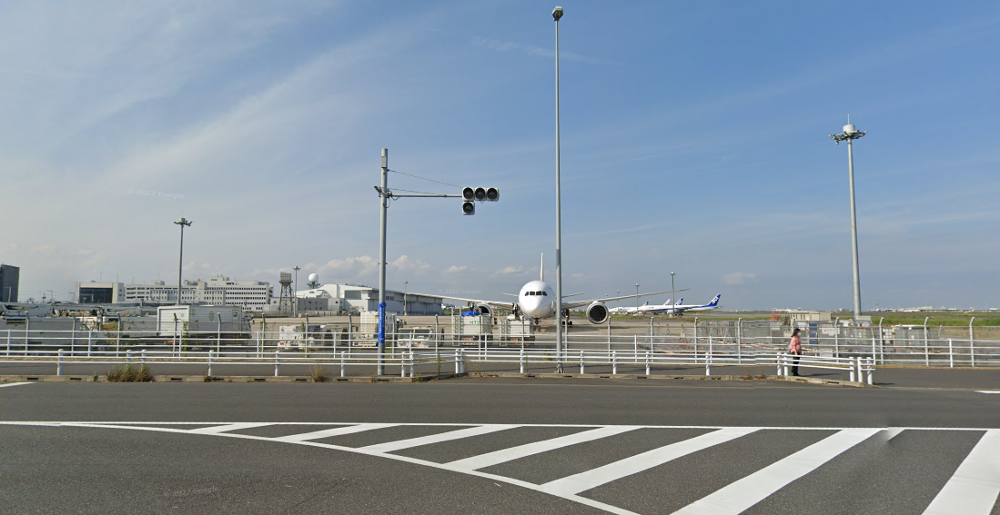
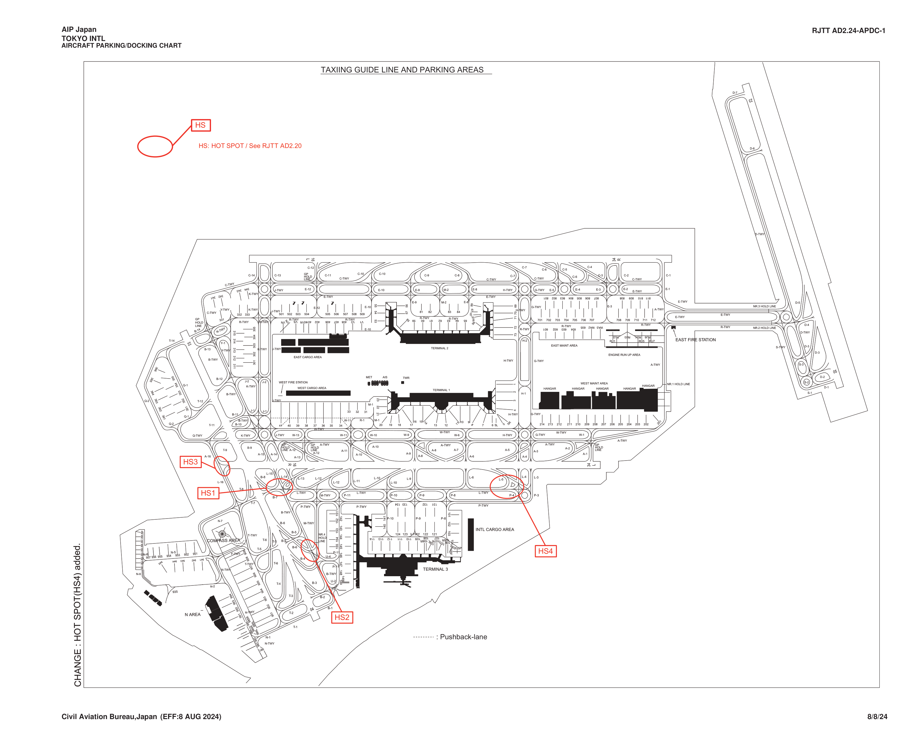
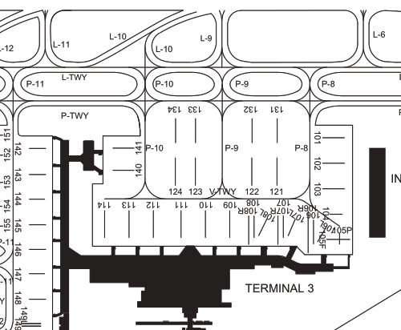
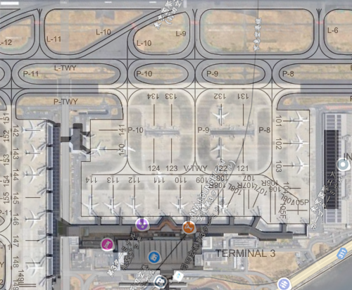
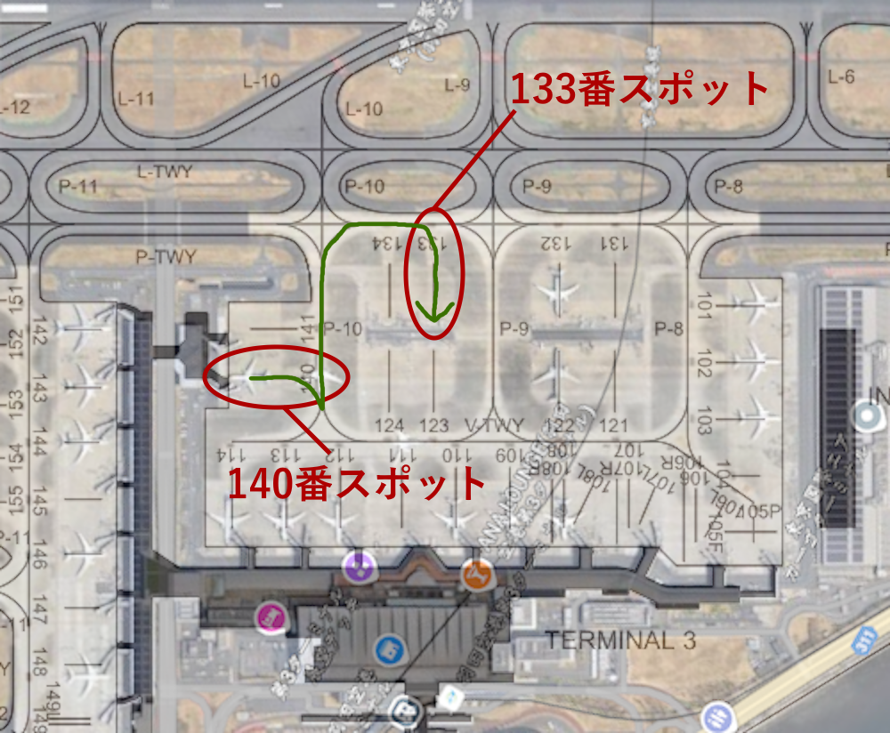
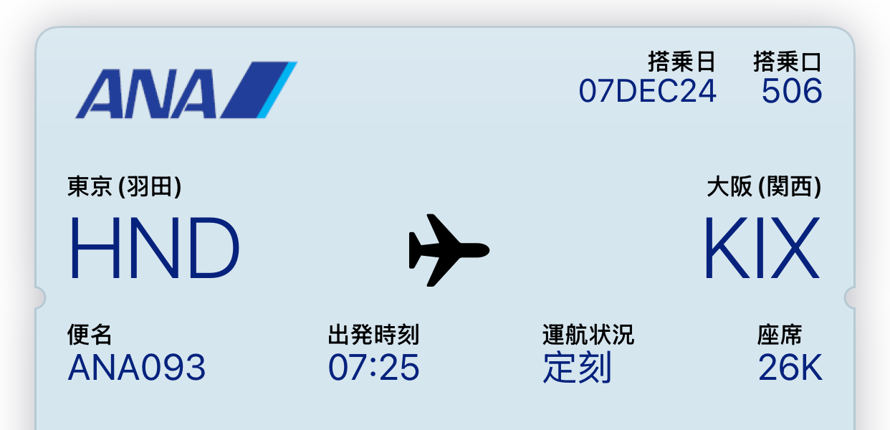
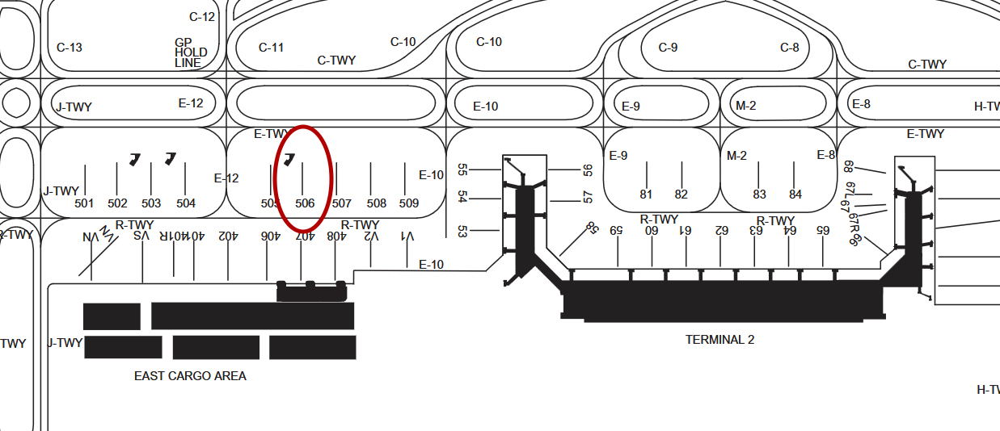
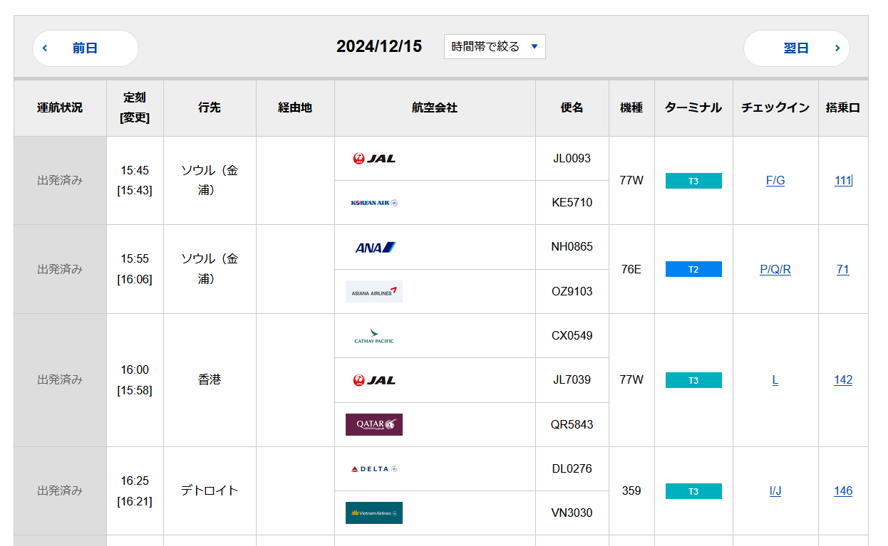

空港は飛行機に乗るためだけの場所ではない
空港は飛行機に乗るためだけの場所ではありません（2回目）。
空港といえば展望デッキ。知識があれば楽しさも段違い。ここではその楽しみ方を伝授します。
Flightradar24
航空ファンじゃなくてもお馴染みのFlightradar24。飛行機の位置がリアルタイムで分かるやつ。ゲートを離れた機体とか離着陸する機体をレーダー上で確認すると楽しい。
機種判別
一目見て機種を判別できるようになれば、貴方も航空マニアの仲間入り。飛行機に詳しくない人に「あれはB767だ」とか言っても、その人は飛行機に興味ないのでやめましょう。航空マニアじゃない人に「あれはナナロク（B767）だ！」とか「おお！あれはデハ（DHC-8）！羽田だと基本見かけないけどここに居るってことはダイバートかな？」と言ってしまったらいよいよ気持ち悪いオタクの仲間入り。
見分け方は過去の記事（別のタブで開きます）を参照してください。
無線傍受
LiveATCで航空無線を傍受できます。空港の展望デッキを眺めながら聞くなら、Ground等を聞くとよいでしょう。
家でもFlightradar24を眺めながらLiveATCのApp/Dep（離着陸）を聞くと楽しい。おすすめ。航空無線で聞いた通りに飛行機が動くのをレーダー上で見るのは何とも代えがたい楽しさがあります。
GSE
GSEとはGround Support Equipment、空港を走り回ってる車の総称です。飛行機を牽引する航空機牽引車、貨物コンテナ（Unit Load Device, ULD）を運ぶドーリーなど、様々あります。詳しくはこのサイト（別のタブで開きます）を参照。
自分のイチオシは航空機牽引車。牽引には最低2種類あることをご存じですか？一つは駐機場から飛行機を押すプッシュバック。これは有名。よく見る。もう一つはこれです。
2024/10/26 16:00 羽田空港の第三ターミナル展望デッキから撮影
何が違うのかとほとんどの人は思うでしょう。押しているのではなく引っ張っているというのもそうなのですが、重要なのはそこではありません。
実はこの機体には人が乗っていません。厳密には操縦席に誰か乗っているかもしれませんが、客室には誰も乗っていません。よく見ると、移動速度が速いのにも気づくかもしれません。
これはスポット移動です。スポットというのは、駐機場と考えて差し支えありません。スポットは空港にいくつもあり、羽田では900番台まであります。この動画は、140番スポットから133番スポットまでB767-300ERが牽引される様子です。
もう一つのポイントは、機体の前輪が牽引車に埋まっている点です。実は、この牽引車は機体の前輪を持ち上げています。三菱重工によれば、B767の総重量は186900 kgなので、この牽引車にも相当な重量がかかっていることでしょう。その状態で機体をこの速度で牽引するとは、すごい出力です。ちなみに、この車が走っているのを近くで見ると、大型トラックが走る時に近いエンジン音が聞こえます。
このタイプの牽引は朝と夜によく見られます。羽田では、天空橋付近の900番台スポットに駐機されている機体を、朝にターミナル方面に引っ張っていく様子や、逆に夕方や夜に天空橋付近に引っ張っていく様子がよく見られます。
天空橋付近の981番スポットに駐機されているJALのB787
このスポットにはJAL機がよく駐機されている
Google Map ストリートビューより
余談ですが、この981番スポットは飛行機撮影界隈の定番スポット。2024年11月にニュージーランド空軍のC-130がここに駐機された。
空港チャート
空港チャートとは何か？説明するよりも見た方が理解しやすい。これが羽田の空港チャートです。
AIS JAPAN AIP 23 Jan 2025 RJTT-TOKYO INTLより引用[1]
国土交通省が提供するAIS JAPANから入手できます。各空港の情報が載ったやつです。滑走路の長さ、角度、進入コース、誘導路、無線周波数など、あらゆる情報を入手できます。
今ここで見ていただきたいのはスポット番号。このままだと見づらいので拡大します。
羽田の第三ターミナル周辺
黒い部分は建物です。数字はスポット番号を表します。衛星写真（Google Map）と重ねるとこんな感じになります。
先ほど140番スポットから133番スポットに機体を牽引する様子を載せましたが、これは下の図に示したように移動していたことになります。
スポット番号は空港現地でも確認できます。これがスポット番号です。

2024/12/6 20:36 羽田空港の第三ターミナル展望デッキから撮影
空港チャートと見比べると、手前から112,113,114番スポットということがわかります。

スポット番号はおおよそ搭乗口の番号と同じと考えて差し支えありません。62番搭乗口から登場しろ、と言われたら、基本的には62番スポットの飛行機に乗ると考えてよいです。ここで次の搭乗券を見てください。右上に搭乗口が書かれています。
506番搭乗口とは随分と数字が大きいですね。ここで空港チャートで506番を探してみると、ここです。
建物から離れた場所。つまり沖止め。この場合はバスで搭乗することになります。時間に余裕を持って行動しましょう。
ちなみに、空港公式サイトなどを見ると、使用するスポット番号が書いてあることがあります。次の画像を見ると、右に搭乗口（スポット番号）が書いてありますね。
羽田空港国際線の出発便[2]
空港チャートと見比べれば、地図上での場所がわかります。機種名も書いてあるので、暫くの期間のデータを取れば、スポット番号ごとの機種の傾向もわかるのではないでしょうか。
参考文献
更新履歴
- 2024/12/15
- 記事作成